Red Hat Process Automation Manager Workshop
This workshop is aimed at providing hands on experience creating Decision and Process Assets. This lab will implement a Loan Approval workflow.
-
Define and create the process domain model using the platform’s Data Modeller.
-
Create an Age Pre-Qualification Decision using Guided Rules
-
Create an Interest Calculation decision using XLS Decision table.
-
Create a Loan Pre-Qualification Decision using Guided Decision tables.
-
Create a Loan Approval workflow.
-
Create Task forms for human tasks.
-
Deploying and Management of the Loan Approval Process
-
Successful completion of the Environment Setup Lab or
-
An existing, accessible, DM/PAM 7.3+ environment.
1. Problem Statement
In this lab we will create an Loan Approval process.
-
Customer initiates the Loan Approval request.
-
Age and Pre Qualification checks are applied to the loan request.
-
If the pre-qualification was succesful, then the request is assigned to a loan manager for approval.
2. Create a Project
To define and deploy a business process, we first need to create a new project in which we can store the BPMN2 model, our domain model and the forms required for user interaction. To create a new project:
-
Navigate to {business_central}
-
Login to the platform with the provided username and password.
-
Click on Design to navigate to the Design perspective.
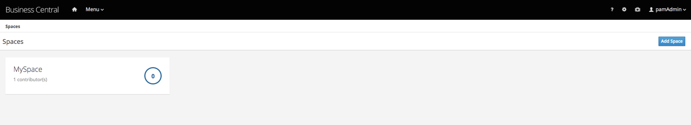
-
In the Design perspective, create a new project. If your space is empty, this can be done by clicking on the blue Add Project button in the center of the page. If you already have projects in your space, you can click on the blue Add Project icon at the top right of the page.
-
Give the project the name
loan-approval, and the description "Loan Approval Process".
With the project created, we can now start building our solution.
3. Solution
3.1. The Domain Model
The business process will collect and carry data through the execution of the process. This data is stored in a data model or domain model. In this lab, we collect two types of data:
-
Applicant: contains information about the Applicant, like age, credit score, monthly income etc. -
Loan: contains information about the Loan request, like the loan duration and the Loan amount.-
In your project, click on the Add Asset button in the middle of the screen.
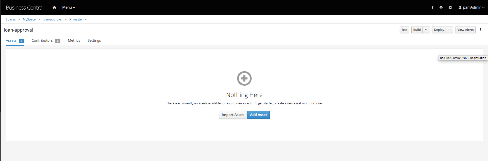
-
In the drop-down menu in the upper-left corner, select
Model. Click on the Data Object tile.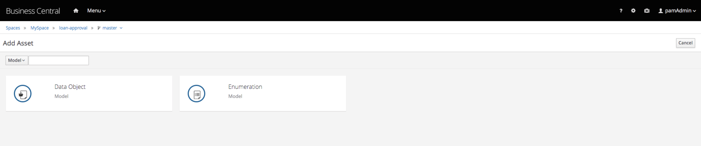
-
Give the Data Object the name
Applicant. Leave the package set to default.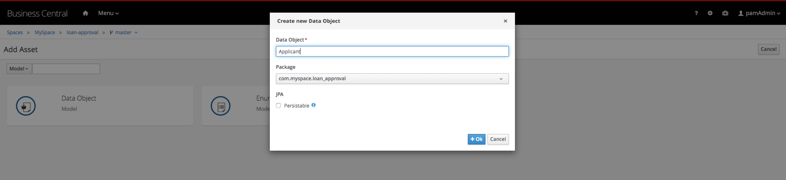
-
Add the following fields to the
Applicantdata object by clicking on the + add field button:ApplicantIdentifier Label Type age
Age
Integer
creditScore
Credit Score
Integer
monthlyIncome
Monthly Income
Double
yearlyIncome
Yearly Income
Double
name
Name
String
-
When you’ve added the fields, save the data object by clicking on the Save button in the top menu. After creation the
ApplicantModel should look like this.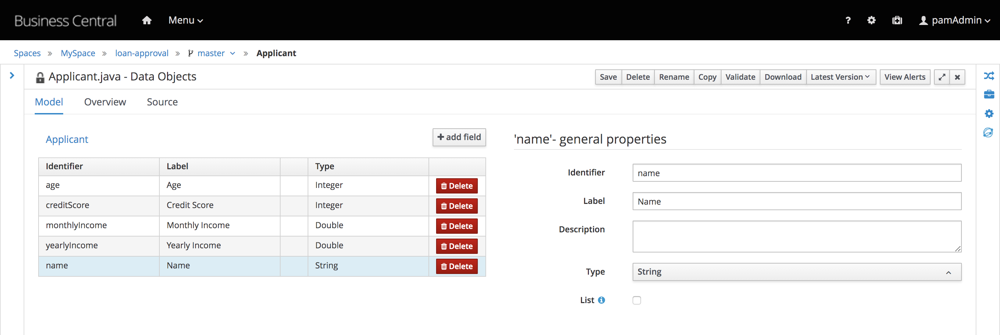
-
Use the _breadcrumb navigator at the top-left of the screen to navigate back to our
loan-approvalproject. -
Click on the blue Add Asset button in the top-right corner and create a new Data Object. Give it the name
Loan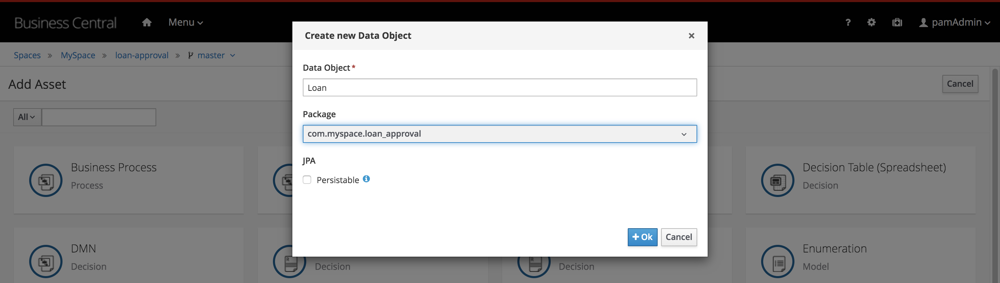
-
Give the
Loanobject the following fields:LoanIdentifier Label Type amount
Amount
double
duration
Duration
Integer
interestRate
Interest Rate
Double
monthlyRepayment
Monthly Repayment
Double
agePreQual
Age PreQualification
boolean
loanPreQualification
Loan PreQualification
boolean
comment
comment
String
When you’ve added the fields, save the data object by clicking on the Save button in the top menu. After creation the
ApplicantModel should look like this.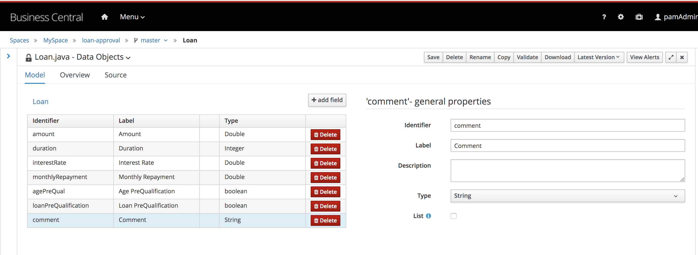
We’re done creating our data model.
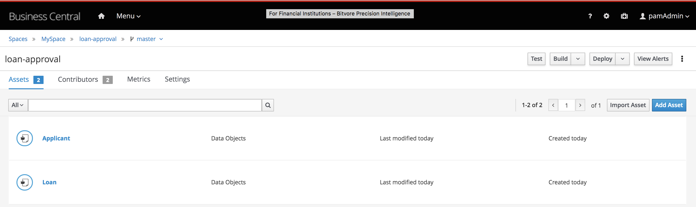
-
We can now create the required decisions for our process.
3.2. Creating the Age Pre-Qualification Decision
First let us create a simple Age Pre Qualification decision. The rule will do a simple check to ensure the Applicant’s age is between 18 and 70.
-
Click on the Add Asset button and choose the
Guided Ruleasset. Name itAgePreQualification.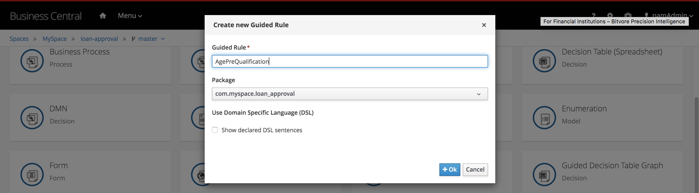
-
Guided Rules are suited for individual rules that can be created in a UI-based rule designer in Decision Central
-
Provide fields and options for acceptable input
-
Are optimal for creating single rules in a controlled format to minimize compilation errors
-
-
When the Guided edior opens up, click on the + icon on the right corner of the editor screen.
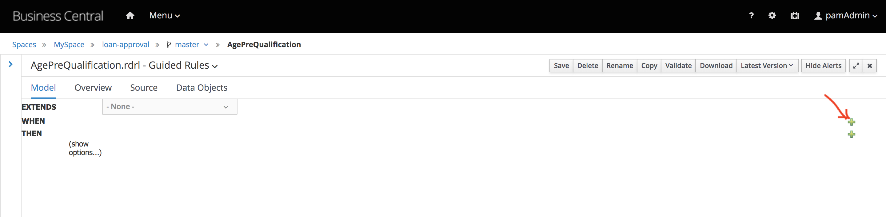
Let us first import the
ApplicantObject as below.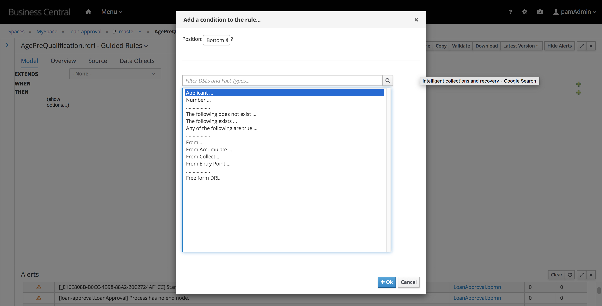
-
Now again click on the first green + icon as we did in the previous step and choose the
LoanObject.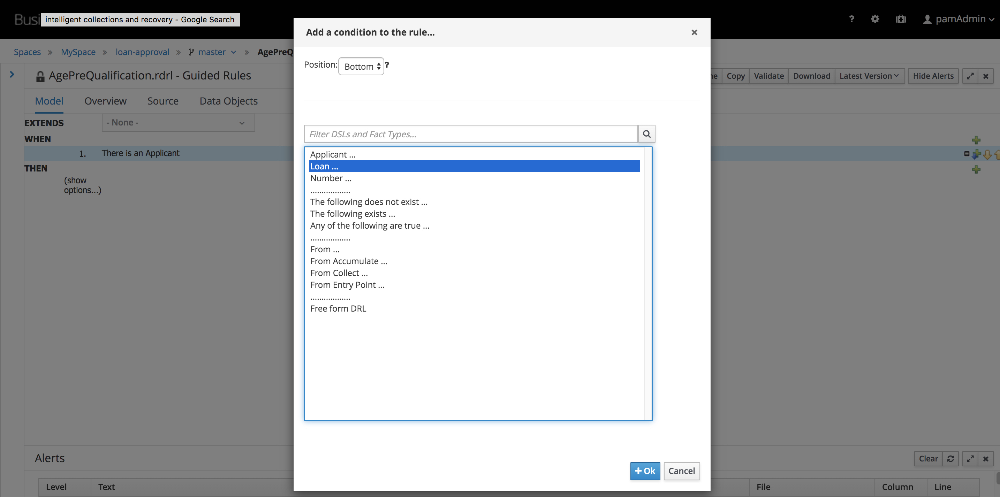
We have imported the required input objects.
-
Next, click on step 1
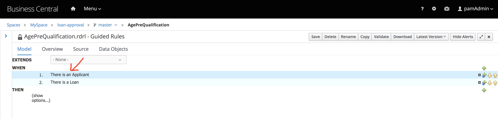
-
Select the All of (And) option in the Multiple field constraint field.
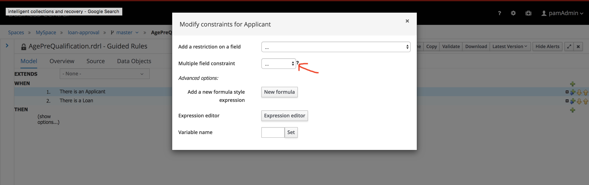
-
Next we will add the conditions. For this click on the all of the following: displayed below the
ApplicantObject. 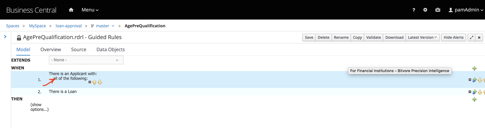 -
We will add the conditions now. We would need the age to be greater than 18 and less than 82. Let us do that by selecting age from the Add a restriction on a field drop down.
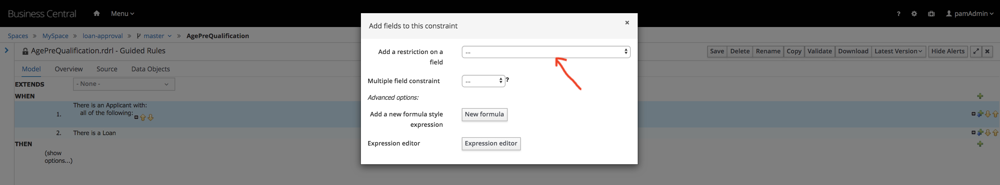
-
This should add the age field on the editor Now select the greater than option from the drop down and click on the small pencil icon next to the drop down.
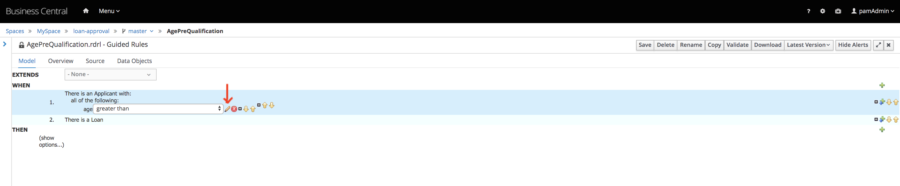
-
We will enter 18 here to indicate the condition, similarly we will add a condition for less than 70 as well.
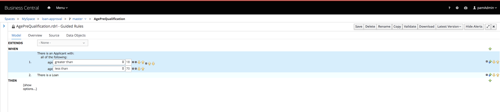
-
Next let us click on the 2nd Step which is There is a Loan.
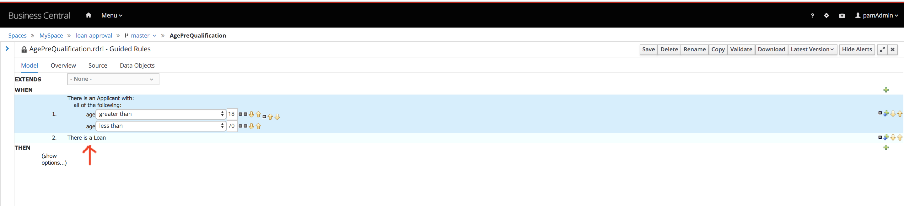
-
We will enter an alias for this Loan object as below
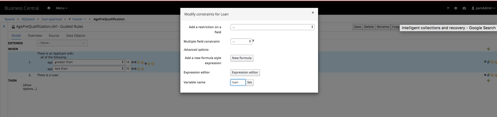
-
Now we have finished defining all the conditions, let us now define the action. Let us click on the green icon to add the Then clause.
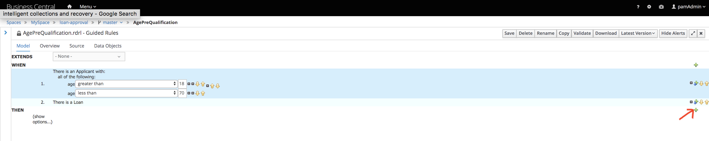
-
Here we will select the option for Change field values of Loan
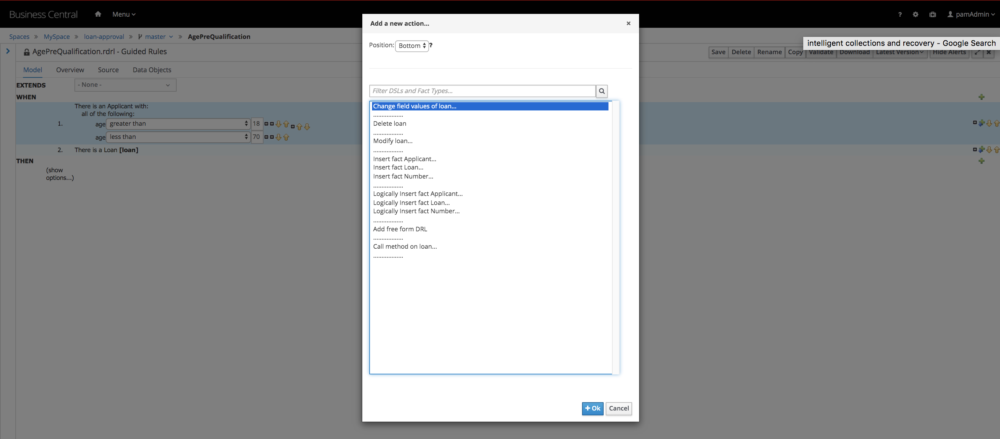
-
Next let us click on the pencil icon to tell the editor which field to choose. We will choose the field
agePreQualand choose ok. Subsequently we again choose the pencil icon next to the field and set the value as true. Your result should look like below.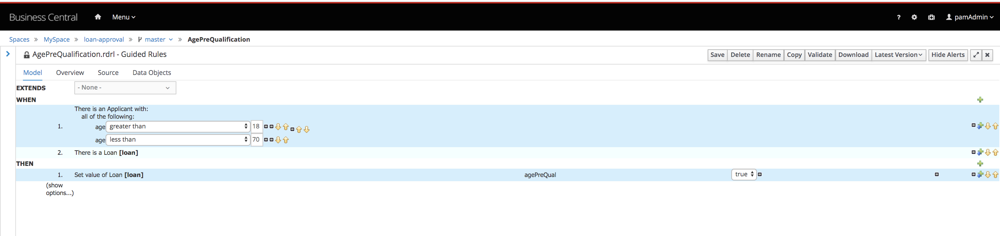
-
Finally we will do one last thing here, since the rules are going to orchestrated using a business process, we will provide it an identifier called Rule Flow Group. For this click on the show options link.
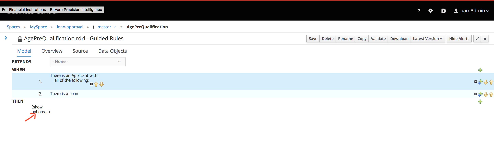
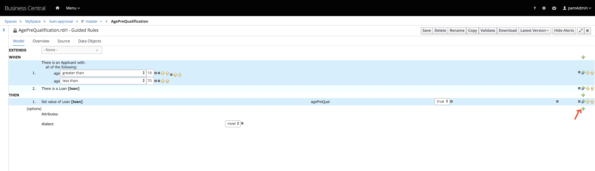
-
We will choose the attribute ruleflow-group from the drop down and click on ok. We will enter
age_qualificationfor the value of attribute.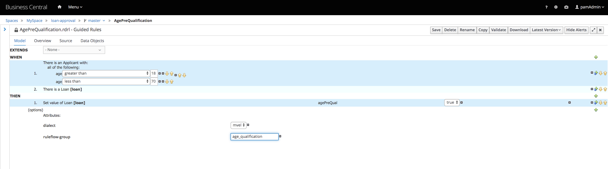
-
We are all done now. We can now click on Save to save the rule and clicking on Validate. This should end up being succesful.
-
Next let us setup a test for testing this rule artifact.
-
For this go back to the asset library view, and choose the Add Asset button. We will choose the artifact type Test Scenario.
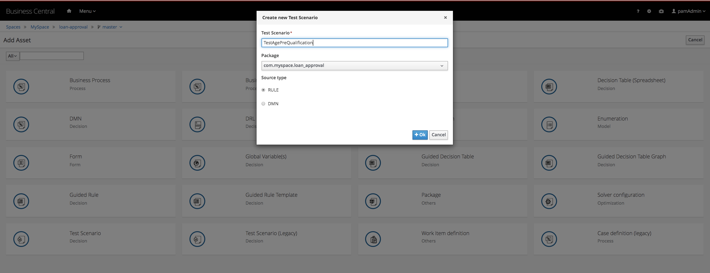
-
On the Test Scenario editor, we provide the Given and the Then clauses. On the right side pane we have the objects listed. Click on the Given Object type and choose the
Applicantobject from the right pane. We will choose theagefield.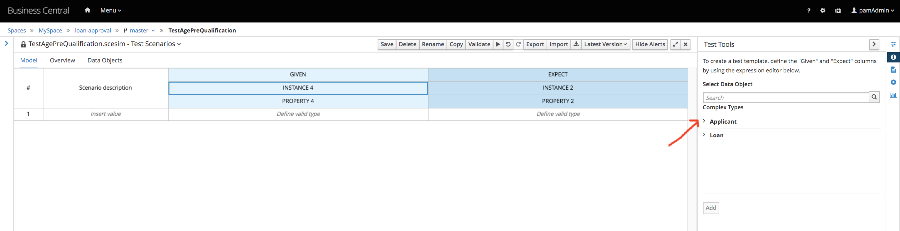
-
Now we will click on the
Applicantcolumn under Given and using the context option add a new column to the right. Here, we will chooseLoan. Finally click on the Then column and add the objectLoan. Here we will choose the fieldagePreQual.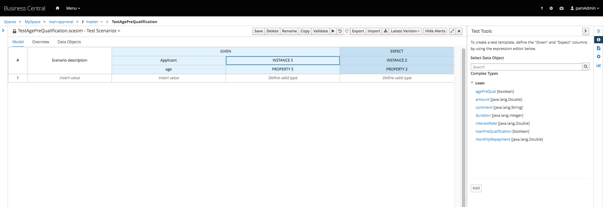
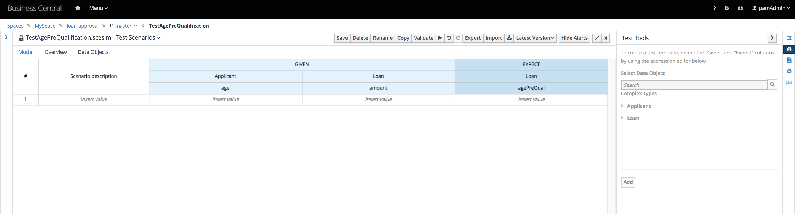
-
Next let us inform the test editor which Rule Flow Group we are testing with. For this click on the settings option from the right side pane.
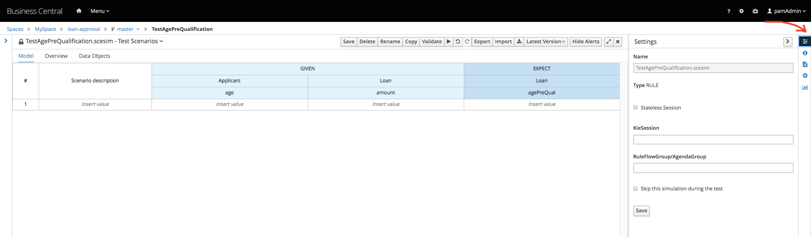
-
Enter the value for the Rule Flow Group as
age_qualification. -
Now we can add values to the various columns by editing the cells similar to spread sheet editing.
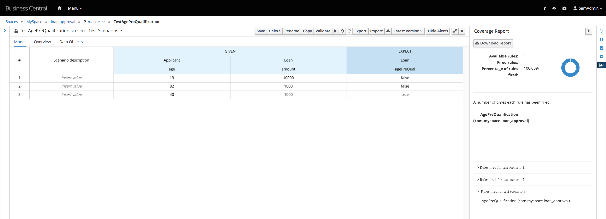
-
Once done, click on the Test button to test the rules. As shown in the image above by clicking on the metrics option from the right side pane, we can see coverage reports show up as well. Finally save the artifact.
Congratulations! We have now created our first artifact.
3.3. Creating the Interest Calculation
-
We will now use another authoring format to create the Interest Rate Calculation table.
-
Uploaded Decision tables are XLS or XLSX decision table spreadsheets that you upload into Decision Central
-
Support template keys and values for creating rule templates
-
Are optimal for creating rules in decision tables already managed outside of Decision Central Have strict syntax requirements for rules to be compiled properly when uploaded
Spreadsheets require two key areas that define rule data: a RuleSet area and a RuleTable area. The RuleSet area of the spreadsheet defines elements that you want to apply globally to all rules in the same package (not only the spreadsheet), such as a rule set name or universal rule attributes. The RuleTable area defines the actual rules (rows) and the conditions, actions, and other rule attributes (columns) that constitute that rule table within the specified rule set. A decision table spreadsheet can contain multiple RuleTable areas, but only one RuleSet area.
-
-
For the purpose of this excercise, you can download the template available here.
Your spread sheet should look like this.
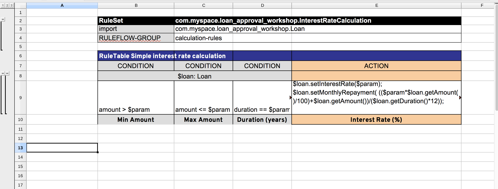
-
Let us now inspect the values. The ruleset section defines the Rule Set name, the Rule Flow Group and import to specify the object which we will be making use of(which in this case is
Loan).The condition columns define the logic for identifying the Interest Rate. We also calculate the Monthly Repayment based on the amount.
-
Let us now define the values RuleTable as below. Edit the downloaded spread sheet and enter these values.
Min Amount Max Amount Duration(years) Interest Rate 300000
7
0.47
300000
600000
7
0.70
600000
7
0.98
300000
10
0.72
300000
600000
10
0.90
600000
10
1.10
300000
20
1.25
300000
600000
20
1.39
600000
20
1.65
Once done, we will upload it to Business Central
-
Now select the Add Asset button from the asset libary page and choose Decision Table(Spreadsheet)
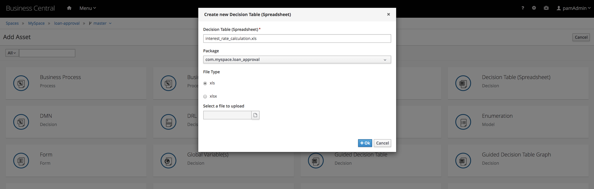
select the file which we edited in the previous step. This should create the artifact succesfully.
3.4. Creating the Loan Pre Qualification Decision
Now we will do a Loan Pre Qualification check based on the loan amount, Debt Ratio and Credit Score.
We will now use the Guided Decision Table asset.
Guided Decison are rules that you create in a UI-based table designer in Decision Central
Are a wizard-led alternative to uploaded decision table spreadsheets
Provide fields and options for acceptable input
-
Now go back to the asset library and click on Add Asset button. Choose the Guided Decision Table option.
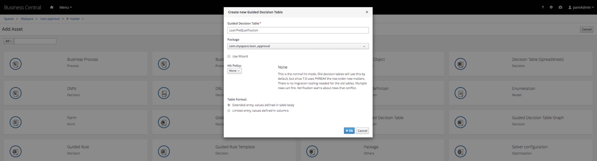
Hit policies determine the order in which rules (rows) in a guided decision table are applied, whether top to bottom, per specified priority, or other options.
For this example, we will leave it as the default selection.
Guided Decision tables provide wizard based approach to defining condition and action columns.
On the Guided Decision Table editor click on the Columns Tab.
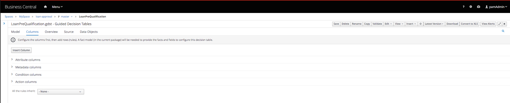
-
First we will define a condition column to check for Min Loan Amount check. To Add a condition colum click on the Insert Column button. This will open up the wizard. Choose the Add a Condition option and click on Next
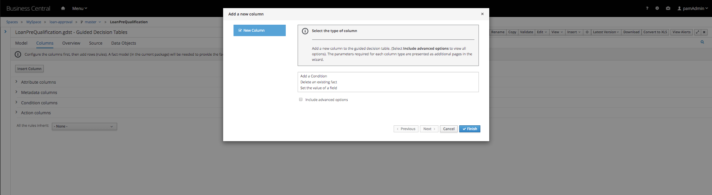
First we need to import the data objects which we will be using for the rule. For this click on the Create a new Fact Pattern button.
Choose the
Loantype and provide a binding variable.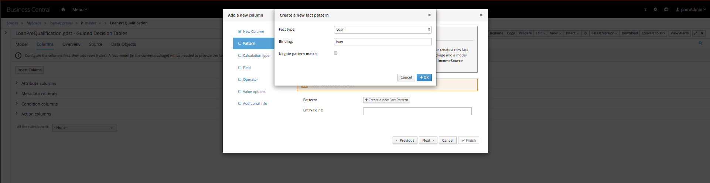
Next let us define the Calculation type, we will choose the Literal Value and proceed.
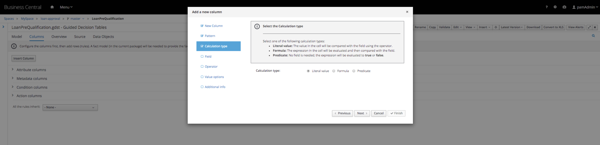
We will choose the amount field.
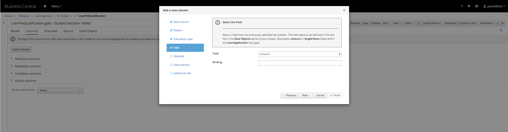
Since we need to define the Min Amount check, we will choose the operation as
greater thanand proceed.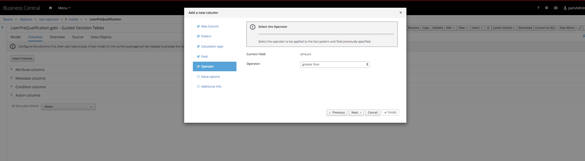
Finally we will give the column a header name and save the column definition.
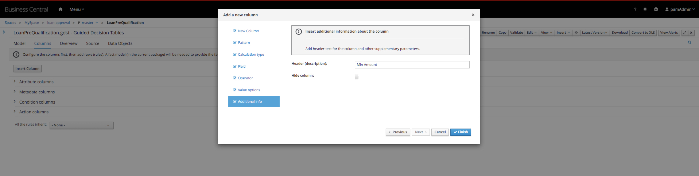
-
Next we will define the Max Loan Amount column, repeat the same steps as above but choose the operation type as
less thaninstead.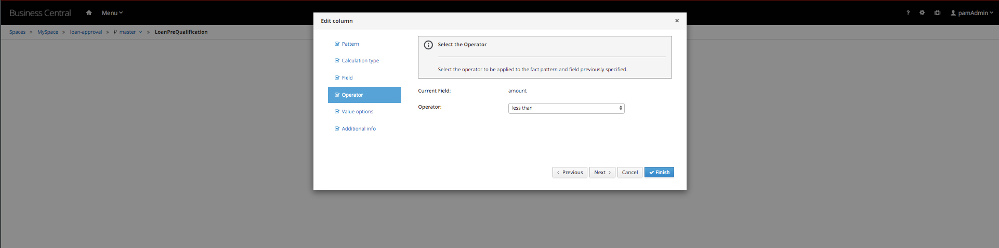
-
Next let us define the Debt ratio.
Since Debt Ratio is a calculation based on the Applicant’s data. We will need to import the
Applicanttype and create a binding.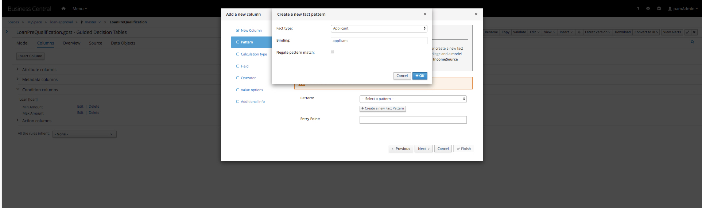
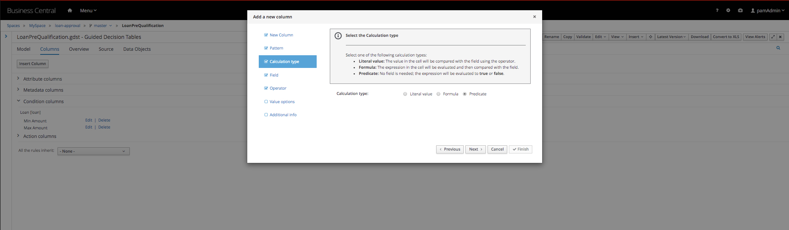
Since this is a Formula and we need to make checks based on the Formula we will use the Predicate option and proceed.
Enter the formula in the predicate field followed by
$param. This will mean that the evaulation of the Formula provided will be checked against the condition defined on the column and will evaluate to True/False.The Debt ratio uses the
monthlyRepaymentAmountas calculated in the XLS spread sheet decision table with this formula:100*(loan.getMonthlyRepayment()/this.getMonthlyIncome()) $param
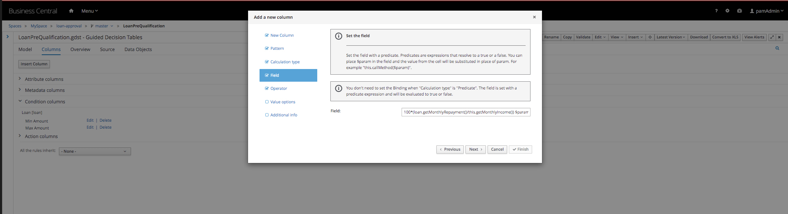
We will proceed along the wizard with default values and finally define a Header description.
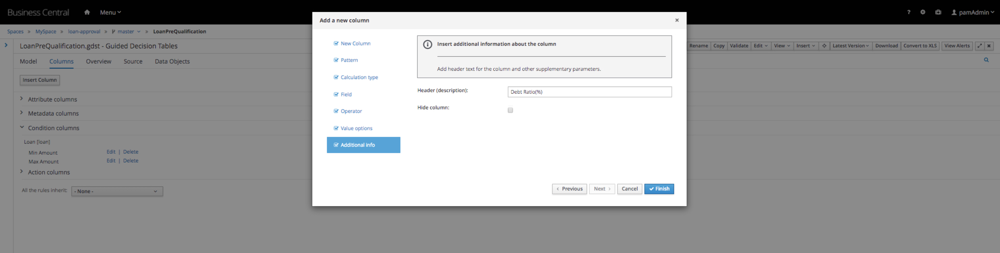
-
Next we will need to create two columns for Max Credit Score and Min Credit Score.
creditScoreis a field in theApplicantObject. Follow the pattern we did for defining the Max and Min Loan Amount to define these columns. -
Now we need to define the Action columns. For this click on Insert Column and choose the value Set the value of a field and hit next.
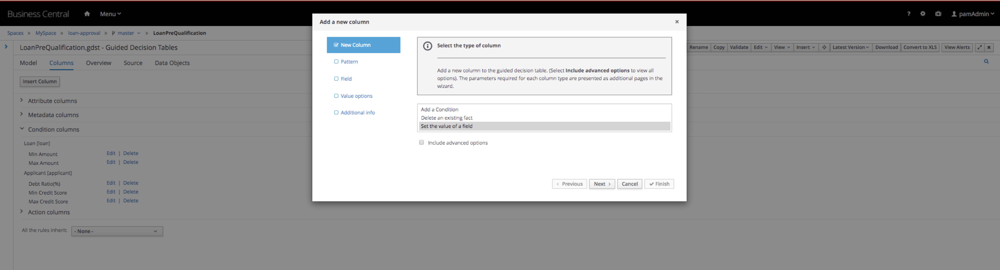
We will set the value of
loanPreQualificationin theLoanObject to a true/false.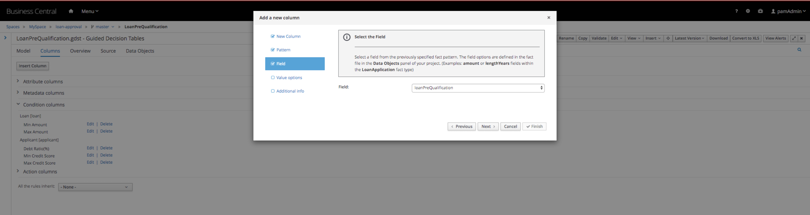
Follow along the rest of the field with default values and define a header description.
-
We will define one more field which will provide reason for qualification/disqualification. For this click on Insert Column option and choose the Insert Column option. Choose the field
commentof theLoanObject and proceed. We will define an allowed set of values to provide a pre-filled drop down on the guided decision table editor.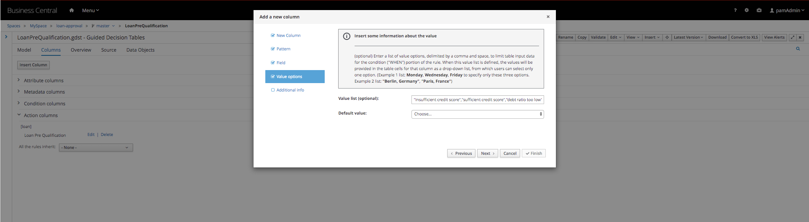
Proceed along the editor with default values and define a header for the field and finsih saving the action column definition.
-
We will need to define the Rule Flow Group for the rule definition that we created here. For this, expand the Attribute Coumns and define the value for the
ruleflow-groupas below. -
Switch back to the Model Tab and finally our table should look like this.
-
We will now enter the values for the decision table. For this click on the Insert button on the top right and click on Append row
-
Fill in the table values as given below. Notice that for the Reason Column the value is available as a drop down and the Loan Pre Qualification column shows up as check box because of its boolean nature.
-
Now Save the decision and click on Validate. To test the decision, let us import a Test Scenario which we have created already. Download the test file from here.
Click on the Import Asset and choose this file.
Now Click on Test to ensure they are no errors. Congratulations! We have now created all of the decisions needed for our process flow.
3.5. Creating the Loan Approval Workflow
Now that we have created all necessary pieces, we will now define the process. We will be building the following process flow.
-
First let us click on the Add Asset button and choose the Business Process type.
-
When the process designer opens, click on the properties pane to open it up.
-
Scroll down in the property panel on the right side of the screen, until you see the section Process Data.
-
Expand the Process Data section and add the following 3 Process Variables by clicking on the + sign.
-
Next let us define the steps one by one. We will start off with Age Pre-Qualification. For this we will need to choose the Business Rule node. Click on the left side process palette on the Task(Rectangle) option and drag drop the node on to the canvas.
Now click on the node and edit the properties on the right side pane. We will give it a name and rule flow group as below.
Next we will define the Inputs/Ouputs for the Rule. For this scroll down to the Data Assignments section and click on the Assignments. We will map the
Loanand theApplicanttypes as input and theApplicantas output.
Next click on the Green circle(start node) and pull an arrow on to the Business Rule node. To connect click on the node and choose the context help displayed around the node to choose the arrow as shown below.
-
Next we need to define a gateway to filter only applicants with succesful Age Pre Qualification check. Click on the Rhombus from the process palette(on the left) and choose the Exclusive.
-
Next we will need to invoke the Interest Rate calculation on the Loan data. For this click on the Task node from the process palette(on the left) and choose the Business Rule node.
We will edit the name and add the Rule Flow group as below.
We will add the Assignment as we did in the previous step with the following definition.
-
We will also choose the Red circle from the process palette(on the left) and choose the End event. Now we will connect the arrows between the Age Pre-Qualification, gateway and the Interest Calculation as below.
We will also need to define the logic for the gateway, for this click on the arrow to the Interest Rate Calculation and expand the Implementation/Execution section. Here we will define the logic as below.
-
Next we need to define the final rule for the Loan Pre Qualification check. Again drag and drop the Business Rule node on the canvas. Edit the name and choose the Rule flow group as
approval-rules. We will define assignment for the rule as below.Now connect the arrows.
-
Next we need to filter out all of the Loan Applications which failed the Pre Qualification. For this we will need to add another gateway. As we did earlier add a Exclusive gateway. We will connect one end of the gateway to the end signal.
-
Last we will define a human task for the Loan Manager approval. For this click on the Task node from the process palette(on the left) and click on the User task. Drag drop the node on to the canvas.
We will edit the name and add the Groups. We will select
Administrators.Next scroll down to the Assignments section and add the following assignment.
-
Finally connect the arrows and define the logic for the XOR gateway as below.
-
Finally click on Validate and it should be succesful.
3.6. Creating the User Forms
Next we will create User Forms to interact with the human tasks. We will set up one form to start the process and one for the Loan Manager Approval.
-
For this on the Process editor click on the following option and choose
Generate all Forms.This will create a form with all possible values, we will now edit these forms to make sure we have the right fields.
-
Go Back to the Asset Library view and filter by Forms. You should now see 4 forms generated.
The first two forms are generated for the Data Objects that we have for Applicant and Form. The third form is a Process start Form(used to kick-start a process) and the last is the User Task form(complete the user task).
-
Now open up the Form com_myspace_loan_approval_Applicant
You can see the various fields possible for an
Applicant. Let us remove the fieldYearly Incomeby clicking on the three dots on the right side of the field. You can also rearrange the fields as you see fit.Save the changes.
-
Next let us open up the Form com_myspace_loan_approval_Loan
You can see the various fields possible for an _Loan. Let us remove the fields
Interest Rate,Monthly Repayment,Age PreQual,Loan PreQualificationandMonthly Repaymentandcommentby clicking on the three dots on the right side of the field. You can also rearrange the fields as you see fit. -
Now we will open up the Process Start Form loan-approval.loan-approval-wkflow-taskform Let us remove the fields
Approvedand click on Save -
Finally let us open up the User Task Form -
Task-taskformand make sure the fields look up. -
Now we are ready to build and deploy the changes. Go back to the asset library and click on Deploy. (The Deploy action Builds & Deploys the changes).
3.7. Process Management and Tracking
-
After the build is succesful, click top menu option and choose Process Definition.
-
We can see the Process Defintion listed, now click on the three dots on the right side of the Process
loan-approval-wkflow. Click on Start -
This should open up the Process Start Form. Enter the values for the form and proceed.
-
We can now see the Process Instance View load up automatically.
Inspect the Process Summary
-
Click on the Diagram Tab on the Process Instance View.
You can see that the completed steps show up in grey color and the current task in progress shows up with a Red outline.
-
The task is assigned for a loan manager approval. If you remember, we assigned the Groups for the task as
Administrators. By default the user you logged in with should have access to this task. To access this click on the top menu option and chooseTask Inbox. -
Task Inbox shows up assigned tasks for the user. In this case we should see one task waiting to be worked on.
-
Since it is assigned to a group, we first need to claim it. Open up the task and click on Claim.
-
Now click on Start. We will approve the task by checking the
Approvedcheck box. We will click Complete. The task should now be completed. Let us go back to the Process Instance section by clicking the top Menu.
-
Now let us inspect the completed instance by selecting the filter option as below.
-
Click on the Process Variables tab and inspect the variables.
-
Since the
Applicantand theLoanobjects are custom java objects, it shows up as hashcode string. To display values so that it shows up on the Process Variables meaningfully, we can add a toString() method to theLoanobject as below. If you make this change, make sure to Deploy the changes and start a new process to see the changes.
-
-
Finally we will inspect the Diagram tab on the Process Instance View. The path that the process took to completion is represented here.
3.8. Interacting with the Kie-Server APIs
The Execution Server provides a rich RESTful API that allows user to interact with the process engine and deployed processes via a REST. This powerful feature allows users to create modern user interface and applications in their technology of choice (e.g. Entando DXP, ReactJS/Redux, AngularJS, etc.) and integrate these applications with the process engine to create modern, process driven, enterprise applications.
The Swagger interface provides the description and documentation of the Execution Server’s RESTful API. At the same time, it allows the APIs to be called from the UI. This enables developers and users to quickly test a,in this case, a deployed business process.
-
Navigate to the swagger page. The swagger endpoint is available in the following url:
KIE-Server-URL/docs
-
Locate the POST operation for the resource /server/containers/{containerId}/processes/{processId}/instances. This is the RESTful operation with which we can start a new process instance. Expand the operation:
-
Click on the Try it out button.
-
Set the containerId to
loan-approval_1.0.0-SNAPSHOT -
Set the processId to
loan-approval.loan-approval-wkflow -
Set Parameter content type to
application/json -
Set the Response content type to
application/json -
Set the body to:
{ "applicant" : { "com.myspace.loan_approval.Applicant" : { "name" : "Mary", "creditScore" : 750, "monthlyIncome" :8000.0, "age": 3 } }, "loan" : { "com.myspace.loan_approval.Loan" : { "duration" : 7, "amount":34000.0 } } }
-
-
Click on Execute.
-
Go back to the Business Central workbench. Go the process instances view and inspect the process instance we have just started.
-
The RESTful API provides many more operations. Let’s use the API to fetch our Task List and complete the Loan Manager Approval task. In the Swagger API, navigate to the Process queries section. Find the GET operation for the resource /server/queries/tasks/instances/pot-owners. Expand the operation and click on the Try it out button. Click on the Execute button. This will return all the tasks for our user
-
We can see the Loan Manager Approval task that is available in our inbox. Let’s complete this task.
-
Go to the Task Instances section in the Swagger interface and locate the PUT operation of the /server/containers/{containerId}/tasks/{taskInstanceId}/states/completed resource. This is the operation with which we can complete a task.
-
Set the containerId to
loan-approval_1.0.0-SNAPSHOT -
Set the taskInstanceId to the id of the task instance you want to complete. The task instance id can be found in the list of task instances we got back from our previous REST operation.
-
Set auto-progress to true. This controls the auto progression of the taks through the various states of the task lifecycle (i.e. claimed, started, etc.).
-
Set the Parameter content type to
application/json -
Set the Response content type to
application/json -
Set the body to:
{ "approved":true }
-
3.9. Using the Kie-Server Client
Here is a take home assignment for using the Java Client to interact with the Kie-Server.
Red Hat Process Automation Manager provides a KIE-Server Client API that allows the user to interact with the KIE-Server from a Java client using a higher level API. It abstracts the data marshalling and unmarshalling and the creation and execution of the RESTful commands from the developer, allowing him/her to focus on developing business logic.
-
In this section we will create a simple Java client for our Loan Approval process.
Create a new Maven Java JAR project in your favourite IDE (e.g. IntelliJ, Eclipse, Visual Studio Code).
Add the following dependency to your project:
<dependency> <groupId>org.kie.server</groupId> <artifactId>kie-server-client</artifactId> <version>7.30.0.Final</version> <scope>compile</scope> </dependency>
-
Create a Java package in your src/main/java folder with the name com.myspace.loan_approval.
-
Download the Applicant.java file from this location and add it to the package you’ve just created.
-
Download the 'Loan.java' file from this location and add it to the package.
-
Create a new Java class called Main.
Add a public static void main(String[] args) method to your main class.
Before we implement our method, we first define a number of constants that we will need when implementing our method (note that the values of your constants can be different depending on your environment, model namespace, etc.):
//Kie-server URL private static final String KIE_SERVER_URL = "http://localhost:8080/kie-server/services/rest/server"; private static final String CONTAINER_ID = "loan-approval_1.0.0-SNAPSHOT"; //PAM username private static final String USERNAME = "adminUser"; //PAM password private static final String PASSWORD = "RedHat"; private static final String PROCESS_ID = "loan-approval.loan-approval-wkflow";`
-
KIE-Server client API classes can mostly be retrieved from the KieServicesFactory class. We first need to create a KieServicesConfiguration instance that will hold our credentials and defines how we want our client to communicate with the server:
KieServicesConfiguration kieServicesConfig = KieServicesFactory.newRestConfiguration(KIE_SERVER_URL, new EnteredCredentialsProvider(USERNAME, PASSWORD));
-
To allow the KIE-Server Client’s marshaller to marshall and unmarshall instances of our domain model, we need to add our domain model classes to the KieServicesConfiguration.
Set<Class<?>> extraClasses = new HashSet<>(); extraClasses.add(Applicant.class); extraClasses.add(Loan.class); kieServicesConfig.addExtraClasses(extraClasses);
-
Next, we create the KieServicesClient:
KieServicesClient kieServicesClient = KieServicesFactory.newKieServicesClient(kieServicesConfig);
-
From this client we retrieve our ProcessServicesClient:
ProcessServicesClient processServicesClient = kieServicesClient.getServicesClient(ProcessServicesClient.class);
-
We now create a Map which we will use to pass the process input variables. We create a new Applicant instance and Loan instance and put them in the Map.
Map<String, Object> inputData = new HashMap<>(); Applicant applicant = new Applicant(); applicant.setName("Mary"); applicant.setCreditScore(750); applicant.setAge(34); applicant.setMonthlyIncome(8000.0); inputData.put("applicant", applicant); Loan loan = new Loan(); loan.setDuration(7); loan.setAmount(34000); inputData.put("loan", loan); -
We can now start a new process instance via the ProcessServicesClient.
Long processInstanceId = processServicesClient.startProcess(CONTAINER_ID, PROCESS_ID, inputData);
-
Finally, we can print the process instance id to System.out.
-
System.out.println("New 'Loan Approval' process instance started with instance-id: " + processInstanceId);
-
Compile your project and run it. Observe the output in the console, which should say: New 'Loan Approval' process instance started with instance-id